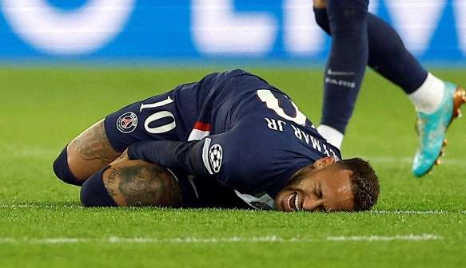

No jogo contra o lille, sofre uma torção no tornozelos

NEYMAR LESIONA O TORNOZELO E DESFALCA O PSG POR 4 MESES
Neymar Júnior, 31 anos, jogador de futebol revelado pelo Santos em 2009, tem uma história no futebol, marcada por alegria, ousadia e contusões. Ciclo que veio se acentuando a partir de 2017, com sua transferência do Barcelona para o PSG.